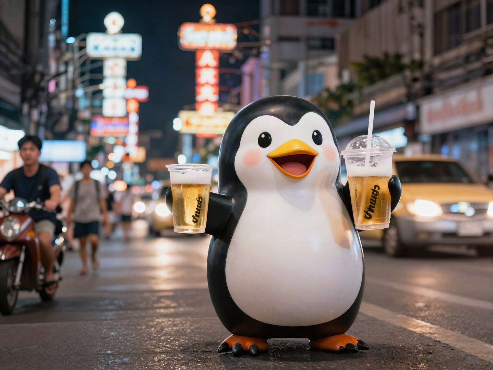
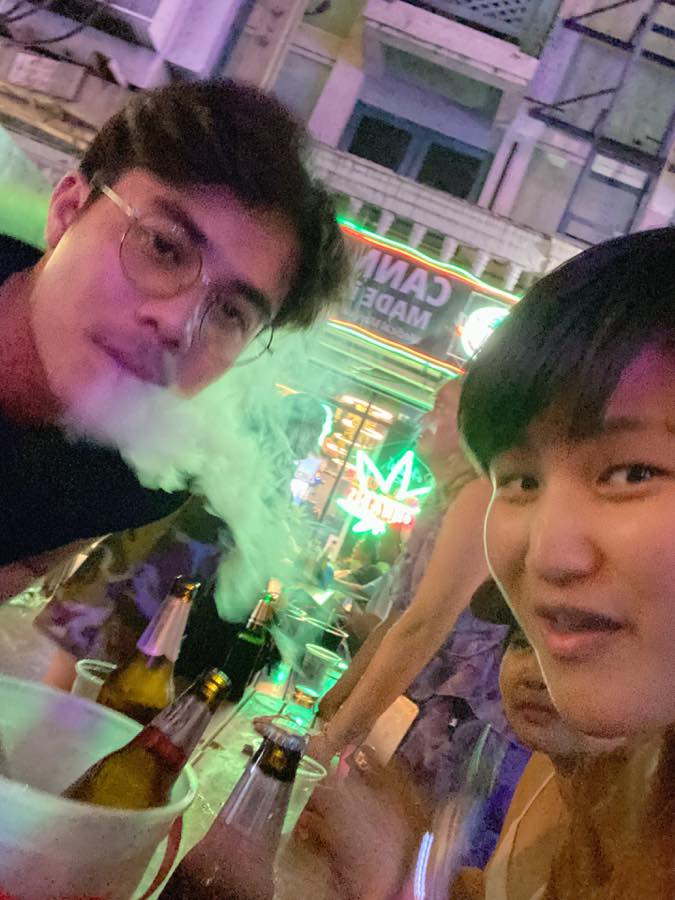
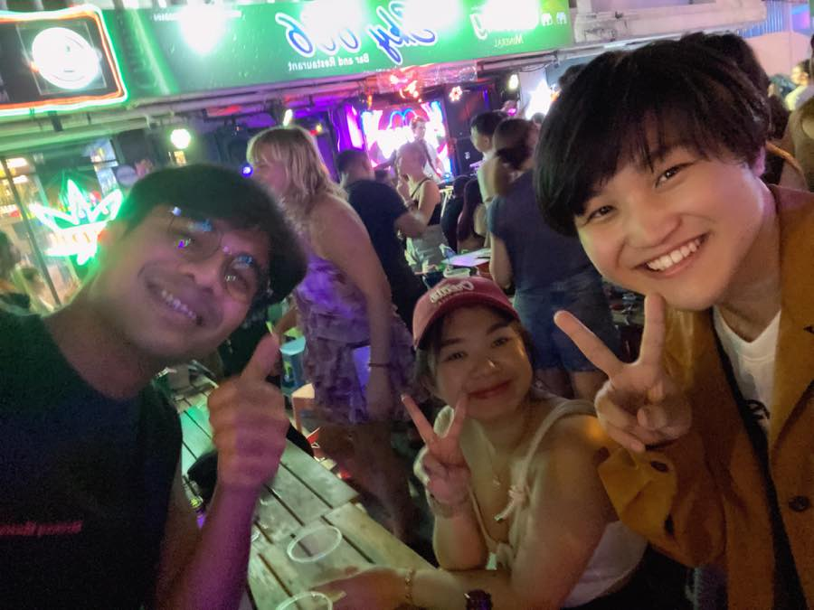
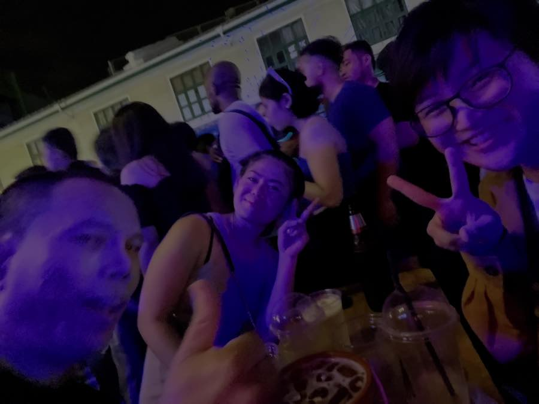
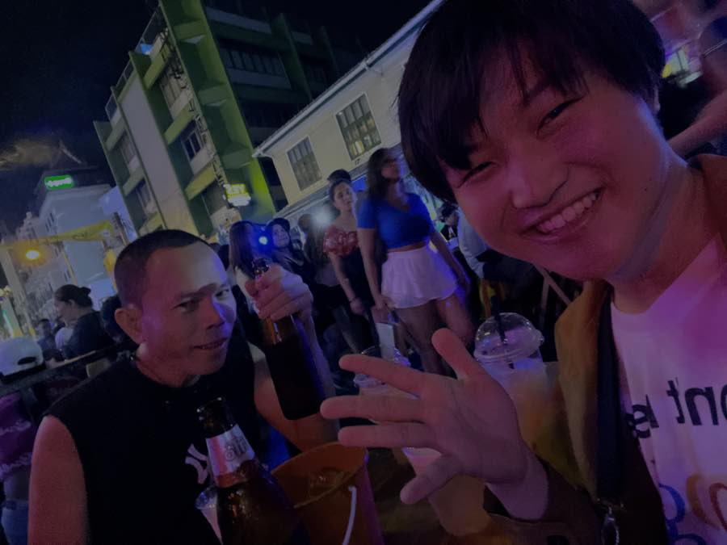

✈️ TRAVEL⚡ 28 SEC
Khaosan Road was the most fun part of my Thailand trip
Noise, drinks, strangers, neon, and a street with no quiet mode.

🏆The Best Part
The most fun place on my Thailand trip was Khaosan Road!
It was a really, really noisy place.
🍻People I Met
I drank with people I met there, and I still remember it quite clearly.




🌿Street Smell
There were also many cannabis shops that I do not often see in Japan. When I walked through the street, there was a unique smell.
🌀Beautiful Chaos
In short, it was chaos.
But that chaos was very, very interesting.
Next Time
I definitely want to go to Thailand again.
It is one of my favorite countries.
0/10
PREVIOUS POST
My first trip abroad: Thailand, alone, with one bag and no plan